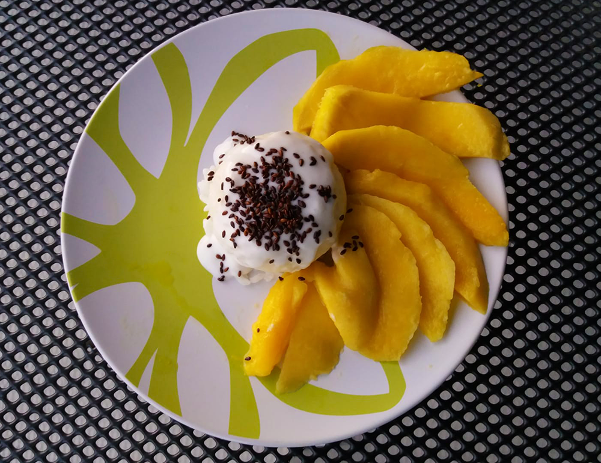

thaise mango sticky rice

Bereidingsduur: 30 minuten
Aantal personen: 2
Ingrediënten:
100 gram kleefrijst
1 mango
300 milliliter kokosmelk
3 eetlepels suiker
2 handjes sesamzaadjes
1 snufje zout
100 gram kleefrijst
1 mango
300 milliliter kokosmelk
3 eetlepels suiker
2 handjes sesamzaadjes
1 snufje zout
Instructies:
1. Was de kleefrijst met water en kook vervolgens in 200 milliliter kokosmelk, 80 milliliter water, 2 eetlepels suiker en 1 snufje zout. Laat het 5 tot 10 minuten afgedekt koken en roer regelmatig tussendoor.
2. Schil de mango en snijd in plakjes.
3. Pak een ander pannetje en rooster de sesamzaadjes hierin tot ze donkerbruin zijn en haal deze er dan uit.
4. Meng 100 milliliter kokosmelk en 1 eetlepel suiker in een pannetje en kook kort.
5. Vul een klein kommetje of timbaaltje met de helft van de rijst en druk stevig aan. Draai om op een plat bord zodat je een vormpje krijgt. Doe dit ook bij het andere bord. Leg de mangostukjes ernaast en verdeel de kokossaus over de bolletjes rijst. Verdeel de sesamzaadjes over de borden.
1. Was de kleefrijst met water en kook vervolgens in 200 milliliter kokosmelk, 80 milliliter water, 2 eetlepels suiker en 1 snufje zout. Laat het 5 tot 10 minuten afgedekt koken en roer regelmatig tussendoor.
2. Schil de mango en snijd in plakjes.
3. Pak een ander pannetje en rooster de sesamzaadjes hierin tot ze donkerbruin zijn en haal deze er dan uit.
4. Meng 100 milliliter kokosmelk en 1 eetlepel suiker in een pannetje en kook kort.
5. Vul een klein kommetje of timbaaltje met de helft van de rijst en druk stevig aan. Draai om op een plat bord zodat je een vormpje krijgt. Doe dit ook bij het andere bord. Leg de mangostukjes ernaast en verdeel de kokossaus over de bolletjes rijst. Verdeel de sesamzaadjes over de borden.